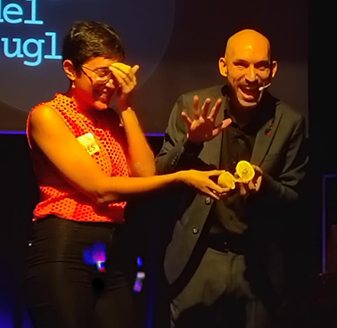
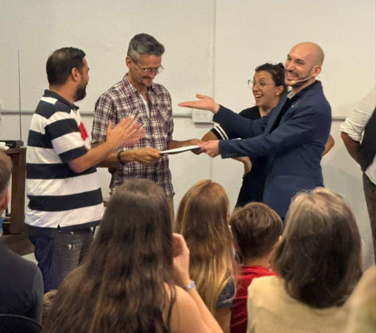

Un espectáculo de magia, ilusionismo y mentalismo participativo para disfrutar y sorprenderse.
Un espectáculo de magia de salón, ilusionismo y mentalismo pensado para disfrutar, participar y sorprenderse.
La propuesta combina magia, mentalismo, participación de los espectadores y humor en un espectáculo dinámico, donde el público es parte de lo que sucede.
A lo largo del espectáculo, diferentes personas son invitadas a participar y convertirse en protagonistas de distintas experiencias de magia e ilusionismo.
Pensado principalmente para público adulto, el espectáculo se adapta al tipo de evento, al espacio disponible y a las características de cada público.

El espectáculo combina diferentes ramas de la magia, integrando ilusionismo, mentalismo y magia visual en una propuesta variada y dinámica.
El ilusionismo convive con experiencias de mentalismo, predicciones, imposibilidades y momentos de participación directa con el público.
El humor forma parte de la interacción con los espectadores, aportando cercanía y dinamismo sin perder la elegancia del espectáculo.
Una propuesta pensada para que todos los invitados puedan disfrutar del espectáculo desde sus lugares.
Los espectadores son parte de la propuesta, tomando decisiones y participando en diferentes efectos.
Una combinación de ilusionismo, magia visual y mentalismo que permite construir un espectáculo variado.
El formato puede ajustarse al espacio, la cantidad de invitados y las características de cada evento.

El espectáculo puede formar parte de diferentes tipos de eventos y adaptarse a las características de cada ocasión.
Contame qué estás organizando, dónde será y cuántos invitados habrá para encontrar el formato de magia de salón que mejor se adapte a la ocasión.
Consultar disponibilidad